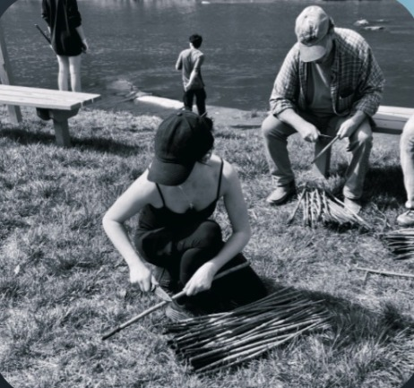
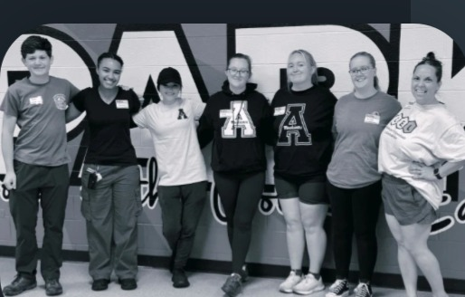

Bridging user experience, system design, and information security.
Hi, I'm Lea. I study Computer Information Systems at Appalachian State University, with a focus on interface design, user accessibility, and digital investigation. I build systems that are frictionless, efficient, and secure; because good technology should work for the person using it, not against them.
Designing seamless, intuitive interfaces that allow effective information exchange.
Understanding users and their navigation preferences using data, interviews, and observation.
Ensuring an inclusive environment by creating features that meet accessibility needs for all users.
Analyzing digital systems and user behavior to identify vulnerable systems and security breaches.
Solving complex structural issues using creative problem-solving and big-picture thinking.
An audit of what Appalachian State publicly discloses about student data versus what its LMS integrations actually do, benchmarked against peer institutions.
View case studyA stage-by-stage breakdown of a real, well-documented spear-phishing breach; from the lure email to the eventual compromise.
View case studyA curated catalog of manipulative UX patterns, each rebuilt as an original mockup and cataloged by tactic and impact.
View case studyA sample-based usability study of the North Carolina DMV website, mapping points of visual tension, information discrepancies, and circular navigation.
View case studyEducation
& experience.
Born and raised in Charlotte, North Carolina, I've built a hands-on sense of technical literacy through initiatives both inside and outside the classroom. My work in digital systems, user interfaces, and information security has taught me to approach setbacks through the lens of critical analysis.
We're all digital users first; with real lives, biases, and experiences shaping how we interact with technology. A single positive technical interaction can define someone's impression of an entire system. Supporting Apple customers has given me first- and second-hand exposure to common technical pain points across iOS and Windows, sharpening my instincts for issue isolation and investigative troubleshooting; skills that carry directly into solving real-world friction points.
Concentration in Cybersecurity.
Fundamentals of programming and algorithmic problem-solving: C, Python, SQL, HTML, CSS, and JavaScript.
Fundamentals of the R programming language for data analysis and visualization: RStudio, data structures, Tidyverse, and graphing.
Systems analysis, forecasting human behavior, applying economic data, and opportunity identification.
Presented to the top-performing cadet flight during the Cadet Leadership Course, recognizing excellence in drills, academics, fitness, and discipline.
Presented annually to one deserving cadet per school for outstanding leadership, academic excellence, and high moral character.
Essay contest first-prize recipient for "Writing With Shortcuts," published under "The Last Word" in the July 2024 issue.
A certificate recognizing service and dedication to the leadership team for the 2025; 2026 academic year.
"She distinguished herself as one of those students you find yourself thinking about long after the semester ends... Lea communicated complex technical problems with clarity and precision, a skill that cannot be taught easily. I recommend her without reservation."
Read full letter"Lea Nixon is an intelligent, ambitious young scholar who has stood out in every academic endeavor... I was consistently astounded by the acuity of her mind. I have no doubt that she will find success in any and all academic pursuits."
Read full letter"She has consistently distinguished herself as a reliable, thoughtful, and solutions-oriented professional... Lea is a motivated and capable individual who brings together technical skill, curiosity, and a strong sense of responsibility. She has my full support and highest recommendation."
Read full letter"She consistently demonstrated exceptional employee qualities... Any organization fortunate enough to have Lea as a member is truly blessed. In my professional opinion, she is an invaluable asset to any group she joins."
Read full letter"Lea established a high standard for engagement and thoughtful discussion that undoubtedly influenced her classmates... Lea's written reflection on the re-emergence of measles in the U.S. is one of the best student products I have received from an undergraduate student."
Read full letter4+ weekly hours of trail maintenance and conservation over 16 weeks; led a trail cleanup initiative promoting environmental stewardship.

Environmental restoration effort in Jefferson County; collaborated with volunteers to plant trees and reinforce riverbanks to reduce erosion.

Community cleanup and recovery support, assisting Boone-area neighbors with debris removal and relief logistics.